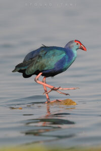
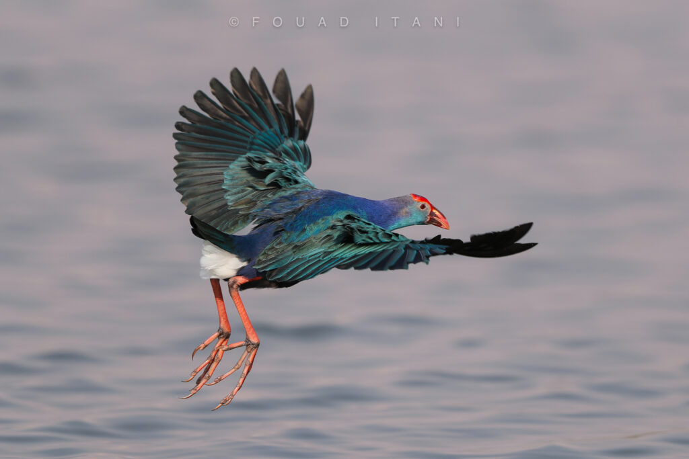

بين الغدران والمستنقعات التي تتناثر كالجواهر في قلب الطبيعة اللبنانية، تطلّ بين الحين والآخر زائرة نادرة، ذات وقارٍ ملكيّ ومظهرٍ آسر... إنها دجاجة السلطان رمادية الرأس (Gray-headed Swamphen)، الطائر المائي الكبير الذي لا يمرّ من دون أن يلفت الأنظار بلونه اللازورديّ الفاتن، ورأسه الرمادي الهادئ، ومنقاره الأحمر السميك، وساقيه الطويلتين بلونهما القاني.
رغم أنها طائر طارئ إلى لبنان، فقد تم تسجيل وجودها في بعض الأراضي الرطبة، لا سيما في حمى كفر زبد في البقاع، حيث تستهويها المياه الهادئة المحاطة بالقصب والبردي الكثيف. تنتمي هذه الطيور إلى بيئات المستنقعات والبرك، وتنتشر أساسًا في جنوب آسيا والشرق الأوسط، مع توسع في نطاقها ليشمل بعض أجزاء أوروبا وأستراليا.


أما في غذائها، فتعتمد هذه الطيور على نظام متنوّع يشمل النباتات المائية، البذور، الحشرات، الأسماك الصغيرة، والقشريات، وتلعب دورًا بيئيًا محوريًا في المستنقعات. فهي تساهم في السيطرة على أعداد الحشرات الضارة، وفي نثر بذور النباتات المائية، مما يساعد في تجديد الغطاء النباتي الطبيعي واستدامة النُظم البيئية الرطبة.


رغم ندرتها، تُعتبر دجاجة السلطان رمادية الرأس من الأنواع المحمية دوليًا، وفق اتفاقية AEWA لحماية الطيور المائية المهاجرة بين أوراسيا وإفريقيا، وهي ليست ضمن الطرائد المسموح بصيدها. لذلك، فإن الحفاظ على الأراضي الرطبة في لبنان، كحمى كفر زبد وغيرها، ليس مجرد عمل بيئي، بل مسؤولية مشتركة لحماية هذا الكائن النبيل الذي يزورنا من وراء الأفق.
وما بين الاسم والهيئة، لا تخطئ العين رمزية هذا الطائر: "دجاجة السلطان"… اسمٌ يشي بالعظمة، ولونٌ أزرق عميق كالملوك، وسلوك هادئ موزون كمن اعتاد السير في بلاط الطبيعة لا على أطرافها. في الثقافات الشعبية، يرتبط اللون الأزرق بالحكمة والسكينة، فيما يرمز الرمادي إلى التوازن بين الضوء والظل. وكأن هذه الطيور، بحضورها النادر، تستحضر فكرة السلام المائي وسط فوضى اليابسة، وتذكّرنا بأن أكثر الكائنات تواضعًا قد تحمل في ريشها رسائل جليلة عن الجمال، التناغم، والقدرة على التأقلم.
فحين تطلّ دجاجة السلطان على المستنقعات، لا تزور المكان فحسب، بل تباركه بحضورها الملكيّ العابر، وتدعونا للتأمل في قيمة ما نغفله من خيرات الأرض وأسرار الطير.